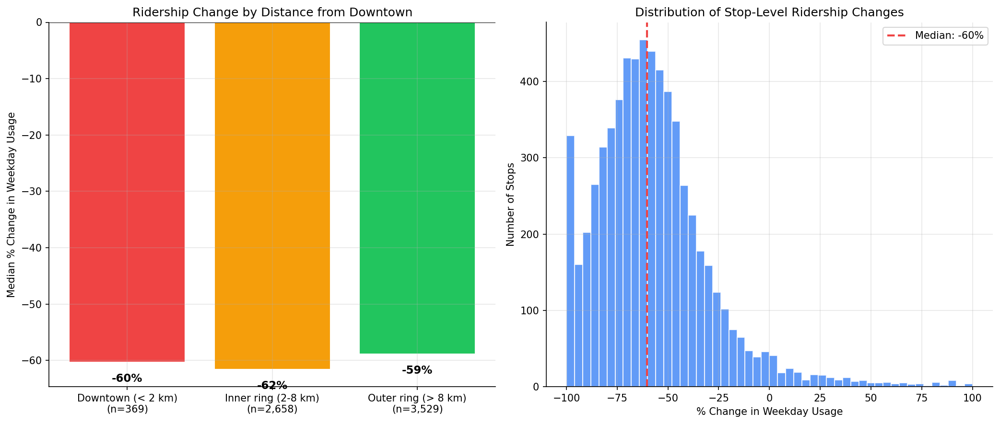
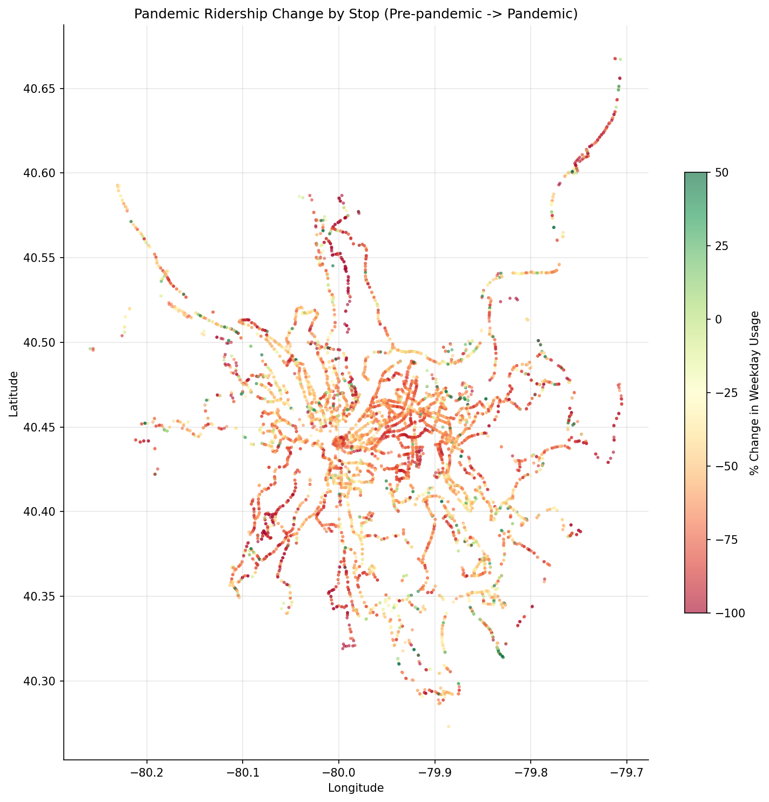

Analysis
33 - Pandemic Ridership Geography
Equity and Strategic Planning
Coverage: Coverage window unavailable for this page.
Built 2026-03-20 19:31 UTC · Commit 1ffb273
Page Navigation
Analysis Navigation
Data Provenance
flowchart LR
33_pandemic_ridership_geography(["33 - Pandemic Ridership Geography"])
f1_33_pandemic_ridership_geography[/"data/bus-stop-usage/wprdc_stop_data.csv"/] --> 33_pandemic_ridership_geography
d1_33_pandemic_ridership_geography(("numpy (lib)")) --> 33_pandemic_ridership_geography
d2_33_pandemic_ridership_geography(("polars (lib)")) --> 33_pandemic_ridership_geography
d3_33_pandemic_ridership_geography(("scipy (lib)")) --> 33_pandemic_ridership_geography
classDef page fill:#dbeafe,stroke:#1d4ed8,color:#1e3a8a,stroke-width:2px;
classDef table fill:#ecfeff,stroke:#0e7490,color:#164e63;
classDef dep fill:#fff7ed,stroke:#c2410c,color:#7c2d12,stroke-dasharray: 4 2;
classDef file fill:#eef2ff,stroke:#6366f1,color:#3730a3;
classDef api fill:#f0fdf4,stroke:#16a34a,color:#14532d;
classDef pipeline fill:#f5f3ff,stroke:#7c3aed,color:#4c1d95;
class 33_pandemic_ridership_geography page;
class d1_33_pandemic_ridership_geography,d2_33_pandemic_ridership_geography,d3_33_pandemic_ridership_geography dep;
class f1_33_pandemic_ridership_geography file;
Findings
Findings: Pandemic Ridership Geography
Summary
System-wide weekday ridership fell 63% between the pre-pandemic baseline (Sep 2019/Jan 2020) and the pandemic period (Sep 2020/Apr 2021). The loss was remarkably uniform geographically: the median stop lost ~60% regardless of whether it was in downtown, the inner ring, or the outer suburbs. The largest absolute losses were concentrated at high-volume downtown and university-area stops, while outer suburban stops showed slightly better retention in aggregate.
Key Numbers
- 6,719 stops with matched pre/post data; 6,556 with pre-pandemic usage > 0
- System total weekday usage: 259,783 -> 95,798 (-63.1%)
- Median stop-level change: -60.2%; Mean: -50.7%
- Downtown (< 2 km): median -60%, aggregate -64.1% (n=369)
- Inner ring (2-8 km): median -62%, aggregate -65.7% (n=2,658)
- Outer ring (> 8 km): median -59%, aggregate -55.7% (n=3,529)
- Kruskal-Wallis (zones): H=13.40, p=0.001 -- zones differ significantly
- Pairwise (Bonferroni): inner ring vs outer ring p=0.001; downtown vs either ring p>0.8
- By mode: Bus -60%, Busway -58%, Light Rail -56% (Kruskal-Wallis H=0.48, p=0.49 -- not significant)
- Largest single-stop loss: Liberty Ave at Market St (-2,329 riders/day, -73%)
Observations
- The pandemic hit uniformly across geography. All three zones saw median declines of 59-62%. The hypothesis that downtown would lose disproportionately more (due to remote work) is only weakly supported: downtown's aggregate loss (-64%) is slightly above average but well within the range of the inner ring (-66%).
- The inner ring actually lost the most in aggregate (-65.7%), likely because it contains high-volume university (Oakland) and hospital-adjacent stops that saw steep declines.
- Outer suburbs retained ridership slightly better (-55.7% aggregate), consistent with more essential/transit-dependent riders in these areas.
- The biggest absolute losses are clustered in two corridors: downtown (Liberty Ave, Smithfield St) and Oakland/university area (5th Ave at Thackeray, Forbes Ave at Morewood). These are commuter and student-heavy stops.
- The distribution is unimodal with a long right tail: most stops lost 40-80%, but a small number gained riders, likely reflecting route restructuring or localized demand shifts.
- Mode differences are not statistically significant (Kruskal-Wallis p=0.49): busway and light rail fared marginally better than bus, but only by 2-4 percentage points.
- Zone differences are statistically significant (Kruskal-Wallis p=0.001): pairwise tests show the inner ring lost significantly more than the outer ring (Bonferroni-corrected p=0.001), while downtown does not differ significantly from either ring.
Discussion
The geographic uniformity of ridership loss challenges the narrative that the pandemic disproportionately affected downtown transit. While downtown and Oakland stops did lose the most riders in absolute terms (because they started highest), the rate of loss was nearly identical everywhere. This suggests the pandemic's impact was driven more by system-wide behavioral shifts (remote work, fear of shared spaces) than by location-specific factors.
The slightly better retention in outer suburbs aligns with the "essential worker" hypothesis: riders who depend on transit for non-office jobs continued riding at higher rates. This has implications for service planning -- if remote work persists, the ridership center of gravity may permanently shift outward, favoring suburban route investment.
The Oakland/university corridor stands out as a potential recovery target: these stops lost 70-87% of riders, largely due to remote instruction. As universities have returned to in-person operations, these stops may have recovered more than this pandemic-era snapshot shows.
Caveats
- The pandemic period averages Sep 2020 and Apr 2021, which represent different stages of the pandemic; conditions changed rapidly.
- The data captures only weekday usage. Weekend patterns may show different geographic signatures.
- Some stops may have been temporarily closed or rerouted during the pandemic, inflating apparent losses.
- The zone classification uses simple distance rings; a neighborhood-level analysis might reveal more nuance.
Review History
- 2026-02-27: RED-TEAM-REPORTS/2026-02-27-analyses-31-35.md — 1 significant issue. Added Kruskal-Wallis + pairwise Mann-Whitney tests for zone and mode differences. Zones significant (p=0.001, inner vs outer); modes not significant (p=0.49).
Output

bar chart of median % change by zone and histogram of changes.

geographic scatter plot colored by % change.
No interactive outputs declared.
per-stop pre/post usage and change metrics.
Preview CSV
Methods
Methods: Pandemic Ridership Geography
Question
Where did ridership fall the most during the pandemic, and does the geographic pattern differ by mode or stop type?
Approach
- Compute average weekday usage per physical stop in two periods: pre-pandemic (mean of datekeys 201909, 202001) and pandemic (mean of 202009, 202104).
- Calculate the absolute change and percentage change in usage per stop.
- Classify stops into geographic zones using distance from downtown Pittsburgh centroid (40.4406, -79.9959): downtown core (< 2 km), inner ring (2-8 km), outer ring (> 8 km).
- Compare ridership loss by zone and mode. Test zone differences with Kruskal-Wallis; if significant, follow up with pairwise Mann-Whitney tests (Bonferroni-corrected). Test mode differences with Kruskal-Wallis.
- Generate a geographic scatter map of stops colored by percentage change.
- Produce summary bar chart by zone and a histogram of change distributions.
Data
| Name | Description | Source |
|---|---|---|
wprdc_stop_data.csv |
Stop-level boardings/alightings across 4 time periods | Local CSV (data/bus-stop-usage/) |
Output
output/pandemic_change_by_stop.csv-- per-stop pre/post usage and change metricsoutput/ridership_change_map.png-- geographic scatter plot colored by % changeoutput/change_by_zone.png-- bar chart of median % change by zone and histogram of changes
Sources
| Name | Type | Why It Matters | Owner | Freshness | Caveat |
|---|---|---|---|---|---|
| data/bus-stop-usage/wprdc_stop_data.csv | file | Referenced via DATA_DIR path composition in analysis script. | Local project data owner not specified. | Snapshot file; refresh by rerunning its pipeline step. | May lag upstream source updates. |
| numpy | dependency | Runtime dependency required for this page's pipeline or analysis code. | Open-source Python ecosystem maintainers. | Version pinned by project environment until dependency updates are applied. | Library updates may change behavior or defaults. |
| polars | dependency | Runtime dependency required for this page's pipeline or analysis code. | Open-source Python ecosystem maintainers. | Version pinned by project environment until dependency updates are applied. | Library updates may change behavior or defaults. |
| scipy | dependency | Runtime dependency required for this page's pipeline or analysis code. | Open-source Python ecosystem maintainers. | Version pinned by project environment until dependency updates are applied. | Library updates may change behavior or defaults. |